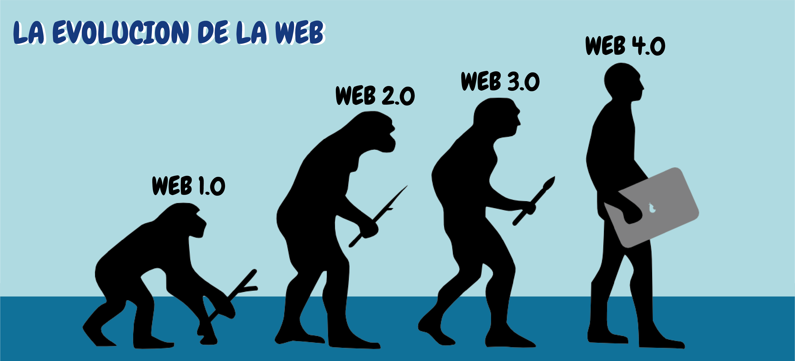

De la Web 1.0 a la Web 4.0

La evolución de la Web representa uno de los procesos de transformación tecnológica más significativos en la historia contemporánea,
ya que ha modificado profundamente la manera en que las personas se comunican, acceden a la información y desarrollan actividades
académicas, sociales y empresariales.
Desde la aparición de la Web 1.0, caracterizada por páginas estáticas y comunicación
unidireccional, hasta la consolidación de la Web 2.0, centrada en la interacción y la participación activa de los usuarios,
cada etapa ha marcado un cambio estructural en la arquitectura y el uso de Internet.
Posteriormente, la Web 3.0, también conocida
como web semántica, introdujo la inteligencia en los sistemas mediante el uso de datos estructurados y tecnologías como la
inteligencia artificial, permitiendo búsquedas más precisas y experiencias personalizadas.
Finalmente, la emergente Web 4.0 plantea
un entorno aún más conectado e inteligente, donde la integración entre dispositivos, asistentes virtuales y sistemas autónomos redefine
la relación entre humanos y tecnología.
En este blog exploraremos como cada generación de la Web ha evolucionado, cuáles fueron sus
principales características y de qué manera han influido en el desarrollo digital que conocemos actualmente.